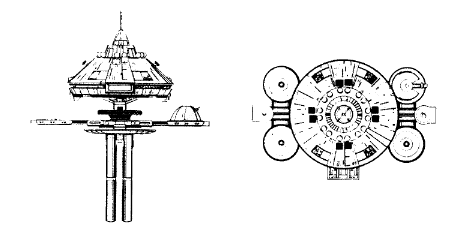

R-1-type Space Station (UFP)

Battle Stats
Reactors and Superstructure
Total Power Units - 128 (Primary Antimatter Reactor - 104, Impulse Engines - 24)
MPR - 15/1
Superstructure - 42
Beam Weapons (Phasers)
Max Power - 10
Firing Chart - T
Arcs - 3 per arc
Bonuses - +2(1-10) +1(11-18)
Missile Weapons (Photon Torpedoes)
Power to Arm - 1
Damage - 12
Firing Chart - O
Arcs - 2 per arc
Deflector Shields
Max Shield Power - 19
SPR - 1/2